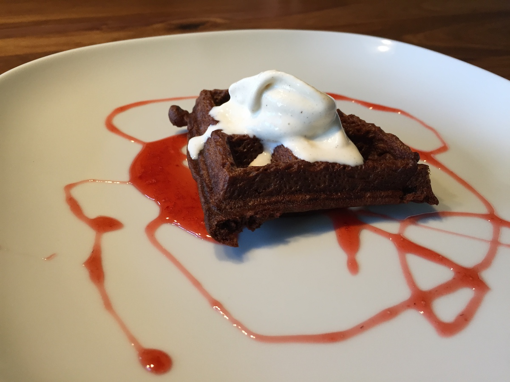
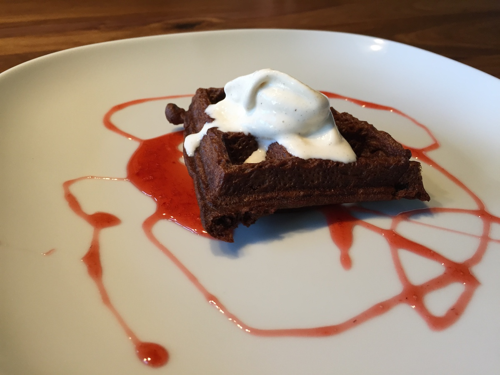
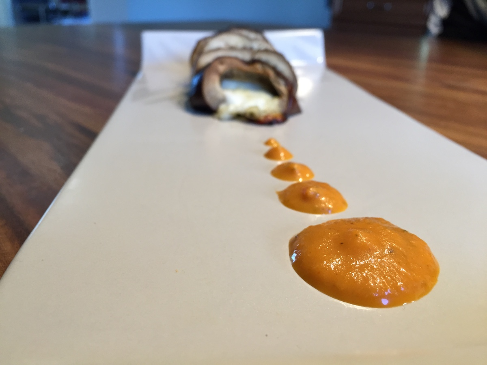
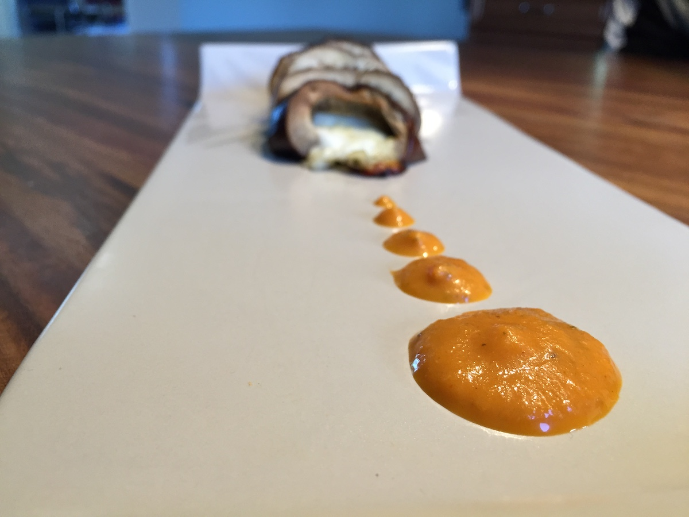

My Story
My admittedly terrible memory means that I learn and create new dishes by experimenting in the moment.
I enjoy thinking visually about food and break down dishes into their simplest components (texture, color, freshness of ingredients...) to create cohesive dishes.
I use food and cooking as a way to create spaces where people can share stories and gain a sense of creative confidence.


 



 
